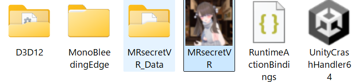
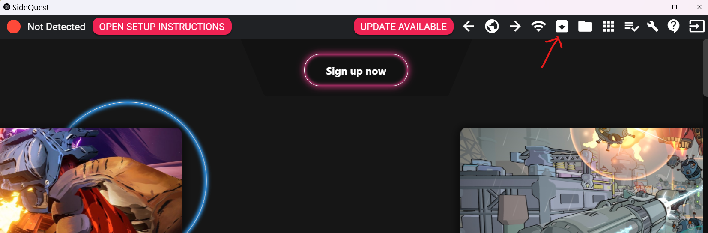

お買い上げありがとうございます
本作品は、基本内容を同じとしながらも以下の2つのバージョンに分かれています：
- PCVR版
- Quest単体版
PCVR版プレイ方法
- SteamVRをインストールしてください。
- 本作品フォルダを全角文字の含まれないパスに移してください（ゲーム内で入力が効かない現象を回避します）
- MRsecretVR_PCVRフォルダを開いてください
- SteamVRをあらかじめ起動しておき、VRヘッドセットとのリンクを確認。
- MRscretVR(.exe)をダブルクリックして開いてください
Quest単体版プレイ方法
-
SideQuestをインストールしてください。
SideQuestセットアップガイドAdvanced Installerをお勧めします - SideQuestを開き、お持ちのQuestをPCとつないでください。
-
接続が確認されましたら、下記アイコンをクリックし、MRsecretVR.apkをインストールしてください。
  - MetaQuestを開き、アプリ選択欄から「提供源不明のアプリ」を選択し、MRsecretVRを選択して起動してください。
バージョン間の違い
Quest単体版の特徴：
- MR機能に対応
- Quest3では、空間認識機能にも対応しており、MRモードで事前読み込みが要求されます。
- ２ｍ×２ｍ以上の平坦なスペースを開けおくことを推奨します。
- 映像処理の軽量化対応
PCVR版の特徴：
- クロマキーパススルーに対応（VirtualDesktopやALVRをご使用ください）